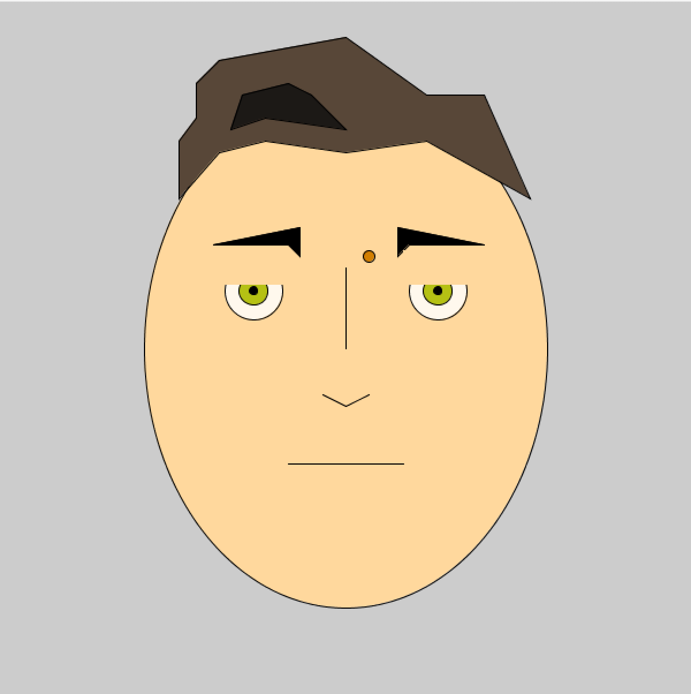
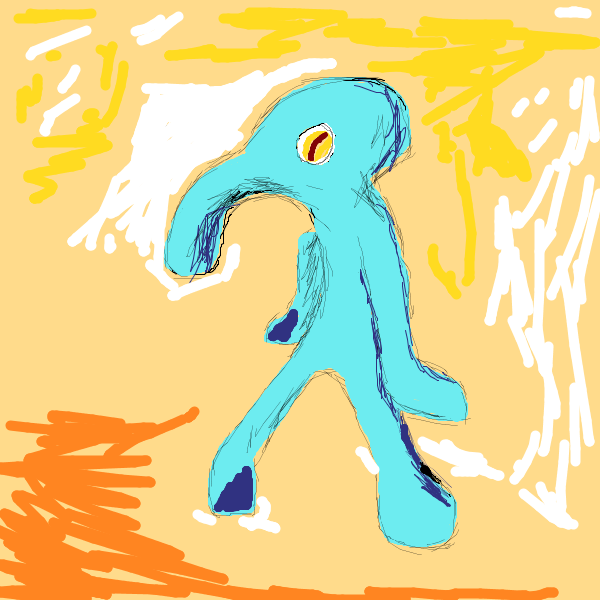
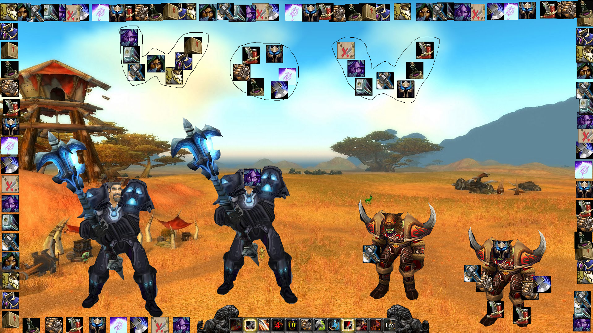

Processing
Drawing Programs
Each of these projects are made as way for me to learn how to use the code language Processing. Number one is a self portrait where the program draws an image of my face. The next work is a drawing made with the mouse using a program for drawing coded by me. Instructions and source code are found below. And the final one of my processing projects is a Warcraft scene builder using World of Warcraft models and icons. Instructions and source code are below as well. Just copy and paste into processing to play.


In my program you can switch between parchment and paper by pressing 'q' and 'w' respectively.
Pressing 'p' will save it
Pressing 'up' or 'down' on the arrow keys will increase or decrease the brush size.
Pressing 1-9 will change the color. In order the colors are:
1-Black
2-White
3-Dark Red
4-Dark Blue
5-Dark Green
6-Yellow
7-Orange
8-Cyan/Teal
9-Purple
Pressing '0' will produce a random number from the color pallet and it is likely that it will be a different color than the ones I've assigned.
This program has my personal flair to it because I like to do calligraphy and I enjoy writing on different colored paper. The colors I've chosen are also personal favorite ink colors.
Here is the code:
//Elements of this code were sourced from https://forum.processing.org/two/discussion/71/simple-paint-program
color c=color(0);
int x, y, xp, yp;
int strokeW=1,flag=0;
void setup()
{
size(600, 600);
background(255, 255, 255);
}
void draw()
{
noStroke();
stroke(c);
strokeWeight(strokeW);
if(flag==1) line(mouseX, mouseY, pmouseX, pmouseY);
}
void mouseDragged() {
flag=1;
}
void mouseReleased(){
flag=0;
}
void keyPressed() {
if (key == 'q')
background(255, 219, 139);
if (key == 'w')
background(255, 255, 255);
if (key == CODED) {
if (keyCode == UP) strokeW++;
if (keyCode == DOWN) strokeW--;
}
print (key);
if (strokeW<0)strokeW=1;
if(key== '1') c = color(0);
if(key== '2') c = color(255, 255, 255);
if(key== '3') c = color(129, 4, 6);
if(key== '4') c = color(48, 50, 129);
if(key== '5') c = color(80, 124, 77);
if(key== '6') c = color(255, 219, 33);
if(key== '7') c = color(255, 133, 33);
if(key== '8') c = color(109, 236, 240);
if(key== '9') c = color(155, 56, 150);
if(key== '0') c = color(random(0,255),random(0,255),random(0,255));
if(key== 'p') saveFrame("images/jc-####.png");
}

keyboard keys:
icons:
m- ambush
n- thunderbolt
b- axe
v- stealth
z- helmet
l- chest cloth
k- crate
j- drink
h- gauntlets
g- boots
f- helmet 2
d- mooncloth
s- axe 2
a- map
characters:
o- forest
i- plains
u- actionbar
t- human
r- orc
p- save
Here is the code:
color c=color(0);
int x, y, xp, yp;
int strokeW=1,flag=0;
PImage m, n, b, v, z, l, k, j, h, g, f, d, s, a, o, i, u, t, r;
void setup()
{
size(1920, 1080);
background(255, 255, 255);
}
void draw()
{
noStroke();
stroke(c);
strokeWeight(strokeW);
if(flag==1) line(mouseX, mouseY, pmouseX, pmouseY);
}
void mouseDragged() {
flag=1;
}
void mouseReleased(){
flag=0;
}
void keyPressed() {
if (key == 'm') {
m = loadImage("http://dma.sjsu.edu/art74.01/jcassell/ambush.jpg");
image(m, mouseX, mouseY);}
if (key == 'n') {
n = loadImage("http://dma.sjsu.edu/art74.01/jcassell/thunderbolt.jpg");
image(n, mouseX, mouseY);}
if (key == 'b'){
b = loadImage("http://dma.sjsu.edu/art74.01/jcassell/axe03.jpg");
image(b, mouseX, mouseY);}
if (key == 'v'){
v = loadImage("http://dma.sjsu.edu/art74.01/jcassell/stealth.jpg");
image(v, mouseX, mouseY);}
if (key == 'z'){
z = loadImage("http://dma.sjsu.edu/art74.01/jcassell/helmet05.jpg");
image(z, mouseX, mouseY);}
if (key == 'l'){
l = loadImage("http://dma.sjsu.edu/art74.01/jcassell/chestcloth04.jpg");
image(l, mouseX, mouseY);}
if (key == 'k'){
k = loadImage("http://dma.sjsu.edu/art74.01/jcassell/crate03.jpg");
image(k, mouseX, mouseY);}
if (key == 'j'){
j = loadImage("http://dma.sjsu.edu/art74.01/jcassell/drink09.jpg");
image(j, mouseX, mouseY);}
if (key == 'h'){
h = loadImage("http://dma.sjsu.edu/art74.01/jcassell/gauntlets04.jpg");
image(h, mouseX, mouseY);}
if (key == 'g'){
g = loadImage("http://dma.sjsu.edu/art74.01/jcassell/boots02.jpg");
image(g, mouseX, mouseY);}
if (key == 'f'){
f = loadImage("http://dma.sjsu.edu/art74.01/jcassell/helmet06.jpg");
image(f, mouseX, mouseY);}
if (key == 'd'){
d = loadImage("http://dma.sjsu.edu/art74.01/jcassell/moonrag01.jpg");
image(d, mouseX, mouseY);}
if (key == 's'){
s = loadImage("http://dma.sjsu.edu/art74.01/jcassell/savageblow.jpg");
image(s, mouseX, mouseY);}
if (key == 'a'){
a = loadImage("http://dma.sjsu.edu/art74.01/jcassell/spy.jpg");
image(a, mouseX, mouseY);}
if (key == 'o'){
o = loadImage("http://dma.sjsu.edu/art74.01/jcassell/elwynn.jpg");
image(o, mouseX, mouseY);}
if (key == 'i'){
i = loadImage("http://dma.sjsu.edu/art74.01/jcassell/barrens.jpg");
image(i, mouseX, mouseY);}
if (key == 'u'){
u = loadImage("http://dma.sjsu.edu/art74.01/jcassell/actionbar.png");
image(u, mouseX, mouseY);}
if (key == 't'){
t = loadImage("http://dma.sjsu.edu/art74.01/jcassell/human.png");
image(t, mouseX, mouseY);}
if (key == 'r'){
r = loadImage("http://dma.sjsu.edu/art74.01/jcassell/orc.png");
image(r, mouseX, mouseY);}
if (key == CODED) {
if (keyCode == UP) strokeW++;
if (keyCode == DOWN) strokeW--;
}
print (key);
if (strokeW<0)strokeW=1;
if(key== 'p') saveFrame("images/jc-####.png");
}